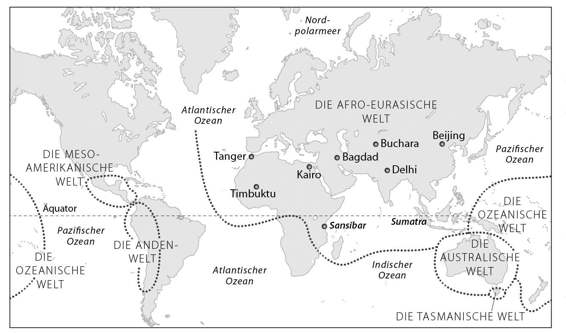

Kapitel 9
Der Pfeil der Geschichte
Nach der landwirtschaftlichen Revolution wurden die menschlichen Gesellschaften immer größer und komplexer, und die erfundenen Ordnungen, die diese Gesellschaften zusammenhielten, wurden immer raffinierter. Mythen und Märchen programmierten die Menschen darauf, fast von Geburt an auf eine bestimmte Weise zu denken und zu handeln, bestimmte Dinge zu wollen und bestimmte Regeln zu befolgen. Damit schufen sie »künstliche Instinkte«, mit deren Hilfe Millionen von Menschen effektiv zusammenarbeiten konnten. Dieses Netz der künstlichen Instinkte nennen wir »Kultur«. Ägypter zu sein bedeutete, automatisch wie ein Ägypter zu gehen, zu stehen, zu sitzen, zu sprechen und zu denken.
Während der ersten Hälfte des 20. Jahrhunderts war die Annahme verbreitet, jede Kultur sei für sich genommen perfekt. Man meinte, jede Kultur habe ein in sich stimmiges Weltbild und ein System gesellschaftlicher, juristischer und politischer Regeln, die so reibungslos ineinandergreifen wie die Zahnräder eines riesigen Uhrwerks. Kulturen besäßen ein unveränderliches Wesen, und ohne Einfluss von außen konnten sie bis in alle Ewigkeit nach demselben Muster funktionieren. Man sprach daher von der »samoischen Kultur« oder der »tasmanischen Kultur«, als ob die Samoer und Tasmanier seit urdenklichen Zeiten dieselben Vorstellungen, Normen und Werte gehabt hätten.
Heute geht man allgemein vom genauen Gegenteil aus. Jede Kultur hat zwar ihre eigenen Vorstellungen, Normen und Werte, doch die Kulturen befinden sich dauernd im Fluss. Die Veränderungen werden nicht nur durch Umwelteinflüsse oder die Begegnung mit Nachbarkulturen verursacht, sondern auch durch die innere Dynamik der Kultur selbst. Auch eine isolierte Kultur in einer stabilen Umwelt kann gar nicht umhin, sich dauernd zu verändern. Anders als die Naturgesetze, die in sich stimmig sind, ist nämlich jede menschliche Ordnung voller Widersprüche. Die Kulturen versuchen fortwährend, diese Widersprüche zu beseitigen, und dies führt zu immer neuen Veränderungen.
Im Europa des Mittelalters glaubten die Adeligen beispielsweise sowohl an das Christentum als auch an die Ritterlichkeit. Ein typischer Adeliger ging morgens in die Kirche und lauschte ehrfürchtig der Predigt des Priesters. »Eitelkeit der Eitelkeiten«, erklärt der Mann auf der Kanzel. »Alles ist eitel. Reichtum, Lust und Ehre sind gefährliche Versuchungen. Du musst sie zurücklassen und auf Jesu Spuren wandeln. Übe dich in Demut wie er, meide Gewalt und allen Luxus, und wenn dich einer auf die rechte Wange schlägt, dann halt ihm auch die linke hin.« Nachdenklich geht unser Adeliger nach Hause, legt seine besten Seidengewänder an und begibt sich zum Bankett auf der Burg seines Herrn. Dort fließt der Wein in Strömen, der Bänkelsänger singt von Lancelot und Guinevere und die Gäste geben schmutzige Witze und blutige Anekdoten aus dem Krieg zum Besten. »Es ist besser zu sterben als in Schande zu leben«, verkündet der Baron. »Wenn jemand deine Ehre beschmutzt, kann dies nur mit Blut abgewaschen werden. Nichts ist besser, als die Feinde in die Flucht zu schlagen, während ihre schönen Töchter zitternd zu deinen Füßen liegen.«
Dieser Widerspruch ließ sich nie auflösen. Doch die dauernden Versuche von Adeligen, Priestern und Gläubigen, ihn zu beseitigen, bewirkten unaufhörliche Veränderungen. Die Kreuzfahrerbewegung war beispielsweise einer der Versuche, diesen Gegensatz zu überwinden. Auf dem Kreuzzug konnten die Ritter auf einen Streich ihren Heldenmut und ihre Frömmigkeit unter Beweis stellen. Dieser Widerspruch brachte Ritterorden wie die Templer und die Johanniter hervor, die eine noch stärkere Synthese aus Christen- und Rittertum herstellen wollten. Er steckt hinter einem Gutteil der mittelalterlichen Kunst und kommt in zahllosen Ritterromanen (zum Beispiel den Epen um König Artus und den Heiligen Gral) zum Ausdruck, deren Handlung um die Frage kreist: »Kann ein guter Ritter auch ein guter Christ sein? Und kann nur ein guter Christ auch ein guter Ritter sein?«
Ein anderes Beispiel ist die moderne politische Ordnung. Seit der Französischen Revolution begreifen die meisten Menschen im Westen Freiheit und Gleichheit als grundlegende Werte. Doch diese beiden Werte stehen im Widerspruch zueinander. Gleichheit lässt sich nur erreichen, wenn die Freiheit der Bessergestellten beschnitten wird. Und wenn jeder unbegrenzte Freiheit hat, dann geht das auf Kosten der Gleichheit. Die gesamte politische Geschichte seit 1789 lässt sich als der Versuch verstehen, diesen Widerspruch aufzulösen. Wer je einen Roman von Charles Dickens gelesen hat, der weiß, dass die liberalen europäischen Staaten des 19. Jahrhunderts die Freiheit in den Vordergrund stellten, auch wenn das bedeutete, dass Arme eingesperrt wurden und Waisen sich als Taschendiebe verdingen mussten. Und wer je einen Roman von Alexander Solschenitzyn gelesen hat, der hat erfahren, dass die Gleichheit des Kommunismus eine grausame Tyrannei hervorbrachte, die jeden Aspekt des Lebens kontrollieren wollte. Der Sozialstaat versucht, einen Mittelweg zu gehen, weshalb er von allen Seiten kritisiert wird.
So wie es der mittelalterlichen Kultur nie gelang, Rittertum und Christentum unter einen Hut zu bekommen, so schafft es die moderne Welt nicht, Freiheit und Gleichheit zu vereinbaren. Das ist jedoch kein Defekt der mittelalterlichen oder der modernen Kultur. Im Gegenteil, Widersprüche sind unvermeidlicher Teil jeder menschlichen Kultur. Mehr noch, sie sind der Motor der Geschichte und machen unsere Art so kreativ und dynamisch, wie sie ist.
Ungereimtheiten, Spannungen und Konflikte machen die Würze jeder Kultur aus. Deshalb vertritt jeder Angehörige einer bestimmten Kultur unweigerlich Vorstellungen und Werte, die einander widersprechen oder sich gegenseitig ausschließen. Dieses Phänomen ist so verbreitet, dass es sogar seinen eigenen Namen hat: die kognitive Dissonanz. Unter diesem Begriff versteht man zwar oft eine psychische Störung, doch in Wirklichkeit handelt es sich um eine überlebenswichtige Angelegenheit. Wenn wir nicht in der Lage wären, gleichzeitig völlig unvereinbare Vorstellungen und Werte zu vertreten, wäre unsere gesellschaftliche Ordnung längst zusammengebrochen.
Wenn Sie zum Beispiel die Muslime verstehen wollen, die sich jeden Freitag in der Moschee in Ihrem Stadtteil zum Gebet versammeln, dann sollten Sie nicht nach einem perfekten System von Werten suchen, die allen Muslimen lieb und teuer sind. Suchen Sie lieber nach Konflikten und Widersprüchen, mit denen sich die Muslime dauernd herumschlagen und die niemand lösen kann. Eine Frage, auf die kein Muslim eine Antwort hat, ist ein Schlüssel zum Verständnis seiner Kultur.
Der Spionagesatellit
Menschliche Kulturen befinden sich ständig im Fluss. Aber sind die Veränderungen willkürlich, oder folgen sie einem übergreifenden Muster? Oder anders gefragt: Hat die Geschichte ein Ziel?
Das hat sie in der Tat. Wenn wir die Entwicklung über die Jahrtausende und Kontinente hinweg betrachten, stellen wir fest, dass kleine, einfache Kulturen zu immer größeren und komplexeren Kulturen verschmelzen. Mit jedem Jahrtausend gibt es immer weniger Kulturen, und die verbleibenden werden immer größer und komplexer.
Das ist natürlich eine sehr grobe Verallgemeinerung und trifft zu, wenn wir in ganz großen Bögen denken. Über kürzere Zeiträume betrachtet, entsteht der Eindruck, dass für jede Gruppe von Kulturen, die zu einer Megakultur verschmilzt, anderswo eine Megakultur in die Brüche geht. Das Reich der Mongolen dehnte sich aus, bis die Mongolen große Teile Asiens und Osteuropas beherrschten, nur um schließlich zu zerbrechen. Das Christentum bekehrte Hunderte Millionen von Menschen und zerfiel gleichzeitig in zahllose Sekten. Die lateinische Sprache breitete sich in ganz West- und Mitteleuropa aus und brachte schließlich eine ganze Familie von unterschiedlichen Sprachen hervor.
Ob wir ein Ziel der Geschichte erkennen oder nicht, hängt von der Perspektive ab. Wenn wir die Geschichte aus der Höhe einer Regenwolke betrachten und nur ein paar Jahrhunderte weit zurückblicken, ist es schwer zu beurteilen, ob sie auf Einheit oder Vielfalt zusteuert. Aber wenn wir die Wolken unter uns zurücklassen, aus der Sicht eines Spionagesatelliten auf die Geschichte schauen und ganze Jahrtausende überblicken, dann ist glasklar, dass sich die Geschichte unaufhaltsam in Richtung Einheit entwickelt. Die Aufspaltung des Christentums oder der Zusammenbruch des Mongolenreichs waren nichts als Bremsschwellen auf der Autobahn der Geschichte.
*
Die allgemeine Stoßrichtung der Geschichte lässt sich am besten an der Anzahl der verschiedenen Welten ablesen, die zu einem beliebigen Zeitpunkt gleichzeitig nebeneinander existierten. Wir haben uns daran gewöhnt, die Welt als Einheit zu betrachten, doch in der Vergangenheit bestand die Erde aus einer wahren Galaxie von isolierten menschlichen Welten.
Nehmen wir beispielsweise Tasmanien. Diese Insel im Süden Australiens wurde vor rund 12000 Jahren vom Festland getrennt, als die Eiszeit zu Ende ging und die Meeresspiegel anstiegen. Einige Tausend Jäger und Sammler blieben auf der Insel zurück und hatten bis zur Ankunft der europäischen Siedler Anfang des 19. Jahrhunderts keinerlei Kontakt zur Außenwelt. Über 10000 Jahre hinweg lebten sie in völliger Isolation. Niemand wusste von ihrer Existenz, und sie wussten nichts vom Rest der Welt. Sie durchlebten ihre eigenen politischen Auseinandersetzungen, gesellschaftlichen Veränderungen und kulturellen Entwicklungen. Aber für die Kaiser von China oder die Könige von Mesopotamien hätten die Tasmanier genauso gut auf einem anderen Stern leben können. Die Tasmanier lebten in einer eigenen Welt.
Auch Amerika und Europa waren lange Zeit eigene Welten. Im Jahr 378 wurde der römische Kaiser Flavius Valens in der Schlacht von Adrianopel von den Goten besiegt und getötet. Im selben Jahr wurde König Chak Tok Ich’aak von Tikal von einer Armee aus Teotihuacan besiegt und getötet. (Tikal war ein wichtiger Stadtstaat der Mayas im heutigen Guatemala, und Teotihuacan war die größte Stadt des amerikanischen Doppelkontinents, die mit 250000 Einwohner etwa auf einer Stufe mit dem damaligen Rom stand.) Es gab keinerlei Verbindung zwischen der Niederlage Roms und dem Aufstieg Teotihuacans. Rom hätte sich genauso gut auf dem Mars befinden können und Teotihuacan auf der Venus.
Wie viele menschliche Welten gab es auf der Erde? Vor 12000 Jahren gab es vermutlich Zehntausende. Bis zum Jahr 2000 vor unserer Zeitrechnung war diese Zahl auf einige Hundert, höchstens wenige Tausend geschrumpft. Bis zum Jahr 1450 war die Zahl noch dramatischer geschrumpft. Damals, kurz vor Beginn der europäischen Erkundungsfahrten, gab es auf der Erde zwar noch einige Zwergwelten wie die von Tasmanien. Doch knapp 90 Prozent aller Menschen lebten in einer einzigen Mega-Welt: der afro-eurasischen Welt. Die drei Kontinente Europa, Asien und Afrika (einschließlich Schwarzafrika) waren durch kulturelle, politische und wirtschaftliche Bande weitgehend miteinander verbunden. Der gemeinsame kulturelle Topf wurde beispielsweise durch religiöse Pilgerfahrten immer wieder aufgerührt. Ein muslimischer Pilger, der im Tal des Niger in Westafrika zur Hadsch aufbrach, konnte in Mekka Gläubigen aus Ostafrika, dem Balkan, Zentralasien, Indonesien und sogar aus China begegnen.
Die übrigen 10 Prozent der Menschheit verteilten sich vor allem auf vier Welten von beachtlicher Größe und Bedeutung:
1. Die mesoamerikanische Welt, die von Zentralamerika bis Nordmexiko reichte.
2. Die Andenwelt entlang der Westküste von Südamerika.
3. Die australische Welt auf dem Kontinent Australien.
4. Die ozeanische Welt, zu der die Inseln des Südwestpazifik von Hawaii nach Neuseeland gehörten.

Karte 3. Die Erde im Jahr 1450. Bei den benannten Orten in der afro-eurasischen Welt handelt es sich um Städte, die der muslimische Reisende Ibn Battuta im 14. Jahrhundert bereist hatte. Ibn Battuta stammte aus Tanger in Marokko und besuchte Timbuktu, Sansibar, den Süden Russlands, Zentralasien, Indien, China und Indonesien. Seine Reisen illustrieren die Einheit Afro-Eurasiens zu Beginn der Neuzeit.
In den folgenden drei Jahrhunderten verleibte sich der afro-eurasische Gigant die übrigen Welten ein. Mesoamerika wurde im Jahr 1521 geschluckt, als die Spanier das Aztekenreich eroberten. Die Eingemeindung der Ozeanischen Welt begann etwa zur selben Zeit mit der Erdumseglung durch Fernanda Magellan. Die Andenwelt brach 1532 zusammen, als die spanischen Conquistadores das Inkareich zerstörten. Die australische Welt verschwand im Jahr 1788, als die Briten mit der Besiedlung des Kontinents begannen. Und Tasmanien wurde schließlich 1803 mit der Errichtung der ersten britischen Kolonie auf der Insel geschluckt.
Der afro-eurasische Riese benötigte einige Jahrhunderte, um diese Welten zu verdauen, doch der Prozess war nicht wieder rückgängig zu machen. Heute leben alle Menschen unter demselben politischen System (der gesamte Planet ist in international anerkannte Nationalstaaten aufgeteilt), demselben wirtschaftlichen System (die Kräfte des Marktes erfassen selbst die entlegensten Winkel des Planeten) und demselben Rechtssystem (zumindest theoretisch gelten überall die Menschenrechte und das Völkerrecht).
Diese Weltkultur ist keineswegs homogen. Genau wie ein Körper verschiedene Organe und Zelltypen hat, so setzt sich unsere globale Kultur aus vielen unterschiedlichen Lebensformen und Menschen zusammen, von Börsenmaklern der Wall Street bis zu afghanischen Hirten. Trotzdem stehen sie alle in enger Verbindung und beeinflussen einander auf vielfältige Weise. Auch wenn sie streiten und kämpfen, gehen sie von denselben Vorstellungen aus und benutzen dieselben Waffen. Ein echter »Kampf der Kulturen« wäre eher wie das sprichwörtliche Gespräch zwischen zwei Tauben: Keiner würde verstehen, was der andere sagt. Wenn heute der Iran und die Vereinigten Staaten mit den Säbeln rasseln, dann sprechen beide die Sprache der Nationalstaaten, der kapitalistischen Wirtschaft, des Völkerrechts und der Atomphysik.
Wir reden noch immer von »ursprünglichen« Kulturen, aber wenn wir mit »ursprünglich« etwas meinen, das sich unabhängig entwickelt hat, uralte regionale Traditionen verkörpert und nicht von außen beeinflusst wurde, dann gibt es das heute nicht mehr. In den vergangenen Jahrhunderten haben sich sämtliche Kulturen unter einer Flut globaler Einflüsse bis zur Unkenntlichkeit verändert.
Ein interessanter Fall sind die Nationalgerichte. Wenn wir in ein italienisches Restaurant gehen, erwarten wir Spaghetti mit Tomatensoße, bei polnischen und irischen Restaurants denken wir spontan an Kartoffeln, in einem argentinischen Restaurant wollen wir saftige Rindersteaks essen, in indischen Restaurants freuen wir uns auf kräftig mit Chili gewürzte Currygerichte, und in einem Schweizer Café auf die heiße Schokolade. Aber der Kakao kommt ursprünglich genauso wenig aus der Schweiz wie die Tomaten aus Italien oder die Chilischoten aus Indien. Tomaten, Chili und Kakao stammen aus Mesoamerika und kamen erst im 16. Jahrhundert, nach der Eroberung des Aztekenreichs durch die Spanier, nach Europa und Asien. Julius Caesar und Dante Alighieri aßen nie Spaghetti mit Tomatensoße, Wilhelm Tell wusste nicht, wie Schokolade schmeckt und Buddha würzte seine Speisen nicht mit Chili. Die Kartoffeln kamen vor weniger als 400 Jahren nach Polen und Irland. Und das einzige Steak, das man 1492 in Argentinien bekam, stammte vom Lama.
Genauso kennen wir aus Hollywood-Filmen nordamerikanische Indianer als tapfere Reiter, die sich mutig den Planwagen der europäischen Pioniere entgegenwerfen, um die Kultur ihrer Ahnen zu verteidigen. Doch diese Reiter waren keineswegs die Vertreter einer uralten, ursprünglichen Kultur. Sie waren vielmehr das Produkt einer gewaltigen militärischen und politischen Revolution, die im 17. und 18. Jahrhundert mit der Ankunft der europäischen Pferde über den Westen Nordamerikas hinwegfegte. Im Jahr 1492 gab es in ganz Amerika kein einziges Pferd. So attraktiv uns die Kultur der Sioux und Apachen des 19. Jahrhunderts erscheinen mag, sie war keine »ursprüngliche«, sondern eine sehr moderne Kultur, die unter der Einwirkung globaler Kräfte entstanden war.
Die globale Vision
Praktisch gesehen begann die entscheidende Phase der Globalisierung vor einigen Jahrhunderten mit dem Aufbau von Imperien und der Intensivierung des Handels. Die Menschen in Afrika, Asien, Europa, Amerika, Australien und Ozeanien wurden durch immer engere Beziehungen miteinander verbunden. So kamen die mexikanischen Chilischoten in die indische Küche, und die spanischen Rinder grasten auf argentinischen Weiden. Doch ideologisch gesehen setzte schon im ersten Jahrtausend vor unserer Zeitrechnung eine sehr viel wichtigere Entwicklung ein, als der Gedanke einer »universellen Ordnung« aufkam. Die Geschichte hatte sich bereits über Jahrtausende hinweg auf eine globale Einheit hinbewegt, doch der Gedanke einer universellen Ordnung war den meisten Menschen noch völlig fremd.
In seiner Evolution lernte der Homo sapiens, die Menschen in »wir« und »die anderen« einzuteilen – »wir« war die Gruppe in der unmittelbaren Umgebung, und »die anderen« waren eben alle anderen. Kein Tier interessiert sich für alle Angehörigen seiner Art. Kein Schimpanse käme auf den Gedanken, sich den Kopf über die Interessen seiner Art zu zerbrechen, keine Schnecke macht für die globale Schneckengemeinschaft auch nur ein Hörnchen krumm, kein Löwenmännchen träumt davon, der König aller Löwen zu werden, und am Eingang zu keinem Bienenstock steht der Spruch »Arbeiterinnen aller Länder, vereinigt Euch!«.
Mit dem Beginn der kognitiven Revolution entwickelte sich der Mensch in dieser Hinsicht zu einer Ausnahme. Die Menschen begannen, regelmäßig mit Fremden zusammenzuarbeiten, die sie sich als ihre »Brüder« oder »Freunde« vorstellten. Doch nicht alle Menschen waren Brüder. Irgendwo, im nächsten Tal oder hinter dem nächsten Hügel, lebten immer noch »die anderen«. Als der erste Pharao Menes vor 5000 Jahren mit der Einigung Ägyptens begann, war den Ägyptern klar, dass ihr Land eine Grenze hatte und dass dahinter »die Barbaren« lauerten. Was diese Barbaren taten, war fremd, bedrohlich oder schlicht uninteressant. Alle erfundenen Ordnungen der Geschichte ignorierten einen großen Teil der Menschheit.
Ab dem ersten Jahrtausend vor unserer Zeitrechnung entstanden jedoch drei potenziell universelle Ordnungen, deren Angehörige erstmals die gesamte Welt in den Blick nahmen und sich die Menschheit als eine große Einheit vorstellten, die einem einzigen Gesetz unterstand. Zumindest potenziell waren damit alle Menschen »wir«, und es gab keine »anderen« mehr. Die erste universelle Ordnung war wirtschaftlicher Natur: Es war die Ordnung des Geldes. Die zweite Ordnung war politischer Natur: die Ordnung der Imperien. Und die dritte Ordnung war religiöser Natur: die Ordnung von Weltreligionen wie dem Buddhismus, dem Christentum und dem Islam.
Händler, Eroberer und Propheten waren die Ersten, die den Gegensatz von »wir« und »die anderen« überwanden und eine Einigung der Menschheit vorhersahen. Für die Händler war die ganze Welt ein Markt und alle Menschen potenzielle Kunden. Sie wollten eine Wirtschaftsordnung errichten, die für alle Menschen gleichermaßen galt. Für die Eroberer war die ganze Welt ein Imperium und alle Menschen potenzielle Untertanen. Sie wollten eine politische Ordnung errichten, die für alle Menschen gleichermaßen galt. Und für die Propheten gab es auf der ganzen Welt nur eine einzige Wahrheit, und alle Menschen waren potenzielle Gläubige. Sie wollten eine religiöse Ordnung errichten, die für alle Menschen gleichermaßen galt.
Während der vergangenen drei Jahrtausende wurden immer ehrgeizigere Versuche unternommen, diese globale Vision zu verwirklichen. In den folgenden drei Kapiteln wollen wir uns ansehen, wie sich Geld, Imperien und Weltreligionen ausbreiteten und den Grundstein der globalisierten Welt von heute legten. Wir beginnen die Geschichte mit dem erfolgreichsten Eroberer der Weltgeschichte, einem Eroberer, der extreme Toleranz und Anpassungsfähigkeit bewies und die Menschen so zu seinen glühenden Anhängern machte. Dieser Eroberer ist das Geld. Menschen, die nicht an denselben Gott glauben und nicht demselben König dienen, sind gern bereit, dieselben Münzen anzunehmen. Osama bin Laden hasste zwar die Kultur, die Religion und die Politik der Vereinigten Staaten, aber ihre Dollars nahm er nur zu gern. Wie kam es, dass das Geld Erfolg hatte, wo Götter und Könige scheitern?